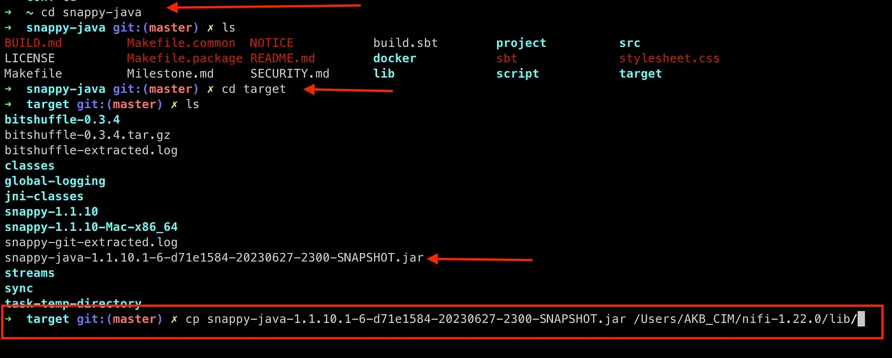

Data Science and Beyond
Insights, Innovations, and Applications
Explore a world where data meets innovation. Dive into tutorials, projects, and insights that bridge the gap between complex data and actionable strategies. Transforming raw data into powerful insights, driving informed decisions, and fostering a culture of continuous improvement.
Welcome to my portfolio! I am Bassey Akom, a dedicated Data Scientist, Data Engineer, and Statistician with a passion for turning data into actionable insights. With a robust background in Python, R, SQL, Hadoop Ecosystem, Spark, and Azure services, I specialize in building efficient ETL pipelines, creating predictive models, and crafting interactive dashboards. My goal is to help businesses harness the power of data to drive strategic decision-making and foster a culture of continuous improvement.
Data Science
In this section, you will find a collection of tutorials and case studies that showcase my expertise in data science and big data analytics. Each piece is designed to offer valuable insights and practical knowledge that can be applied to real-world scenarios. From data extraction and cleaning to advanced analytics and visualization, these tutorials will guide you through the essential processes and tools needed to excel in the data-driven world.
Throughout my career, I have tackled a wide range of challenges, including:
- Developing comprehensive data processing frameworks to streamline workflows and improve efficiency.
- Designing and implementing predictive models to forecast trends and inform business strategies.
- Creating interactive dashboards that provide stakeholders with clear, actionable insights.
- Conducting statistical analyses to uncover hidden patterns and correlations in large datasets.
My approach is rooted in a deep understanding of both the technical and business aspects of data science. I believe that effective communication and collaboration are key to the success of any data project. By working closely with cross-functional teams, I ensure that data solutions are aligned with business goals and deliver tangible value.
Whether you are looking to enhance your data skills, gain insights into complex data problems, or explore innovative solutions, this portfolio offers a wealth of knowledge and expertise. I invite you to explore my work, connect with me on social media, and reach out if you have any questions or collaboration opportunities.
Together, let's illuminate the power of data and drive meaningful change in the world of technology.
How to Install and Setup Apache Hadoop, Hive & Nifi on macOS with Apple Silicon M1/M2

Setting up a robust data processing environment on macOS with Apple Silicon (M1/M2) can be challenging due to compatibility issues. This tutorial guides you through installing and configuring Apache Hadoop, Hive, and Nifi, enabling you to efficiently store and process large datasets. Discover the steps to get your Big Data projects up and running seamlessly on your Mac.